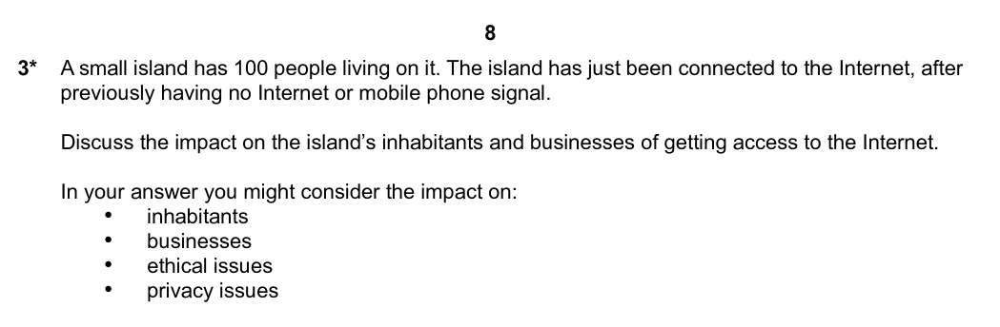

Legal Ethical Moral
By Jeetaditya Chatterjee
the fun 6 markers
Press s for speaker notes
Impact of technology on wider society
Ethical Issues
The idea of stake holders
the use of cctv in public places
its a form of security that can be used to solve crime
it can be used to identify and locate criminals faster
It can reduce insurance premiums
while to some citizens who live in the area
its an invasion of privacy
it can be considered overreach by businesses and government
logging activities and the use of computers and phones in the workplace
Legal issues
Cultural issues
The internet and censorship
Environmental issues
privacy issues
Questions
A distributing warehouse collects data on its workforce describe 2 ways the management would collect that data? [4 marks]
discuss the environmental impacts of computer usage [6 marks]
write down two advantages and disadvantages of using social media everyday [4 marks]
Identify 2 ways people are monitored every day [2 marks]
Question 5
